正文
原网址 : http://blog.sina.com.cn/s/blog_486e105c01000914.html
下午，那媒体要开组建筹划会，本 ID 必须参加，先把帖子放上来。大盘走势昨天已提示 “ 现在依然存在重新跌回这 5 分钟中枢，从而扩展成新的 30 分钟中枢的可能，所以 2915 是不能有效跌破的，否则将扩展出新的 30 分钟中枢 ”。早上一典型的 5 分钟顶背驰让这情况变得天经地义。昨天第三类买点后，理论上两种可能之一就是演化成大级别中枢，今天就是一经典演示。该中枢从 7 日 13 点多的 2911 算起，形成后，和前几天下面那 30 分钟中枢操作一样，市场又给一次相同类型的操作机会。不多说，最近很忙，对大家照顾不周，抱歉了。
个人的理解能力之间相差太大，自然就有先后之别，因此用一堂课给基础差的同学补补课也是应该的，而且很多自以为基础好、明白的，看看也有益，有些细微处的理解也不一定能完全到位。前面课程，最基础的无非两方面，一、中枢；二、走势类型及其连接。这两方面相互依存，如果没有走势类型，中枢也无法定义；而没有中枢，走势也无法分出类型。如果理论就此打住，那么一个循环定义就不可避免。要解决该循环，级别的概念是不可缺少的。有了级别，一个严格的递归式定义才可以展开。
所谓的最低级别，就如量子力学的量子概念，物理世界不是想当然地无限连续的，而市场的交易同样如此。 最严格去定义，每笔的交易是最低级别的，连续三笔相同价位的交易，就构成最低级别的中枢。有一个最低级别中枢的走势，就是最低级别的盘整走势类型 ( 注 : 可以看出先定义了中枢，在中枢的基础上再定义走势类型 )；有两个最低级别中枢的走势，就是最低级别的趋势走势类型，如果第二个中枢比第一个高，那就是上涨走势类型，反之就是下跌走势类型。 一般来说，假设依次存在着 N（N>2）个中枢，只要依次保持着第 N 个中枢比 N-1 个高的状态，那么就是上涨走势类型的延续；依次保持着第 N 个中枢比 N-1 个低的状态，就是下跌走势类型的延续。显然，根据上面的定义，在最低级别的上涨里，只要也只有出现依次第 N 个中枢不再高于、即等于或低于第 N-1 个的状态，才可说这最低级别的上涨结束。最低级别下跌的情况与此相反。
上面就用最低级别的中枢把走势在最低级别上进行了完全分类，而三个连续的最低级别走势类型之间，如果发生重叠关系，也就是三个最低级别走势类型所分别经过的价格区间有交集，那么就形成了高一级别的缠中说禅中枢 ( 递归定义，注 : 在前述定义的本级别走势类型递归出高级别中枢 )。有了该中枢定义，依照在最低级别上的分类方法，同样在高级别上可以把走势进行完全的分类，而这个过程可以逐级上推，然后就可以严格定义各级别的中枢与走势类型而不涉及任何循环定义的问题。但如果按严格定义操作，必须从最低级别开始逐步确认其级别，太麻烦也没多大意义，所以才有了后面 1、5、15、30、60 分钟，日、周、月、季、年的级别分类。在这种情况下，就可以不大严格地说，三个连续 1 分钟走势类型的重叠构成 5 分钟的中枢，三个连续 5 分钟走势类型的重叠构成 15 或 30 分钟的中枢等话。在实际操作上，这种不大严格的说法不会产生任何原则性的问题，而且很方便，所以就用了，对此，必须再次明确。
以上这些，都在前面反复提到，但很多人好象还是糊涂，不妨最后再说一次。显然，站在任意一个固定级别里，走势类型是可以被严格划分的。例如，说一个 5 分钟的走势类型，显然不可能包含一个 30 分钟的中枢，因为按定义，一个单独的 5 分钟走势类型无论如何延续，也不可能出现一个 30 分钟的中枢。要形成一个 30 分钟的中枢，显然只能是 3 个以上 5 分钟走势类型的连接才可能。走势类型与走势类型的连接，这两个概念不可能有任何含糊的地方。5 分钟走势类型，必须包含也最多包含 5 分钟级别中枢，至于是 1 个还是 5 个，都不影响是 5 分钟走势类型，只不过可被分类成是 5 分钟级别的盘整类型还是趋势类型而已。
显然，一个高级别的走势类型必然就是由几个低级别的走势类型连接而成，但不一定都是次级别的走势类型，例如，a+B+b，B 是 30 分钟中枢，由 3 个 5 分钟走势类型构成，a、b 是 1 分钟走势类型，那么 a+B+b 这个 30 分钟走势类型就能分解成 2 个 1 分钟走势类型和 3 个 5 分钟走势类型的连接。但我们还可以通过拆散重分，使得一个高级别的走势类型必然就是由几个次级别的走势类型连接而成，由于中枢里至少有三段次级别走势类型，所以就有了 “ 缠中说禅走势分解定理二 “：任何级别的任何走势类型，都至少由三段以上次级别走势类型构成。
例如，还是上面 a+B+b 的例子，估计很多人怎么都看不出为什么这分解定理一定成立。其实，不妨假设 B 中有三段 5 分钟走势类型，分别表示为 B1、B2、B3，那么 a+B+b=a+ B1+B2+B3+b=（ a+ B1）+B2+（B3+b），显然（ a+ B1）、B2、（B3+b）都是 5 分钟走势类型，这就是该分解定理所说的东西。学过一点抽象代数的都容易理解上面的话，用抽象的话说，就是走势类型连接这种运算是符合结合律的。但走势类型的连接运算不符合交换率，这就是该运算的特别之处。只要明白了走势类型连接运算的结合性，那就不难同时明白 “ 缠中说禅走势分解定理一 ”：任何级别的任何走势，都可以分解成同级别 “ 盘整 ”、“ 下跌 ” 与 “ 上涨 ” 三种走势类型的连接。
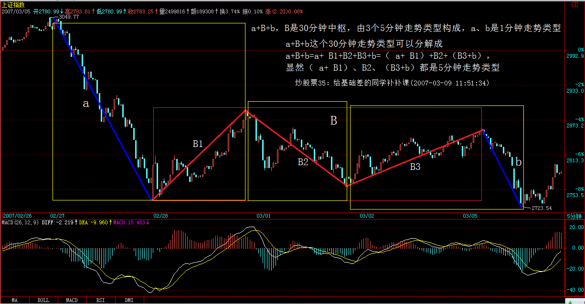
其实，就像量子力学有多种数学的处理形式，本 ID 的理论，同样可以用抽象代数的方法来处理，只是那样的话，就更少人能看懂了。而抽象的方法，不仅简洁，而且更能暴露其实质。这些以后再说了，现在还是用比较简单的、类似几何的方法去理解吧。
注意，走势是客观的，而用什么级别去分析这走势却是主观的。根据 “ 缠中说禅走势分解定理一 ”，任何级别的任何走势，都可以分解成同级别 “ 盘整 ”、“ 下跌 ” 与 “ 上涨 ” 三种走势类型的连接，那么就意味着，按某种级别去操作，就等于永远只处理三种同一级别的走势类型及其连接。还是上面 a+B+b 的例子，站在 5 分钟级别的角度，这里有三个走势类型的连接，站在 30 分钟级别的角度，就只有一个走势类型。那么，前面反复说的，确定自己操作的级别，就是确定自己究竟是按什么级别来分析、操作。例如，5 分钟级别上下上三段，意味着在 5 分钟级别上有 2 个底背驰、2 个顶背驰，按买点买、卖点卖的原则，就有 2 次的完整操作；而按 30 分钟级别看，这里就没有买卖点，所以就无须操作。 从纯理论的角度，操作级别越低，相应的效率越高，但实际操作级别是不可能随意低的，而究竟按什么级别来分析、操作，和你的资金等具体条件相关。例如，T+1 的情况下，按 1 分钟以下级别的操作，就面临着不能顺利兑现的风险，而系统的操作，要把所有可能的情况都考虑其中，因此完全按 1 分钟以下级别的操作是不可能的，除非是 T+0。此外，级别越小，平均的买卖点间波幅也越小，因此，那些太小的级别，不足以让交易成本、交易误差等相对买卖点间波幅足够小，这样的操作，从长期的角度看，是没有意义的。所谓的交易误差，可以包括很多，例如你看见买点到你实际操作完成，必然有一个时间差，因此也就有了价位上的差别，这对于大级别无所谓，但对特小级别，那就需要特别精确，而这是不可能长期达到的。
因此，根据各种情况，你就可以相应定好自己的操作级别，这样就可以按照相应的级别分析、操作。也就是说，一旦该级别出现买卖点，你必须进入或退出。也就是说，在你的操作级别上，你是不参与任何调整或下跌走势类型的。有人曾问本 ID 为什么 2001 年后四年都不看股票，那很简单，就因为在本 ID 的操作级别上出现卖点，所以就全部退出，等有相应买点再说。制定了相应级别，是否按照次级别以下进行部分操作，那是操作风格问题，而实际上是应该安排这种操作的，特别当进入一个你的操作级别的次级别盘整或下跌，这是你可以忍受的最大级别非上涨走势，当然要操作一下来降低自己的成本。如果你的操作级别很大，那么其次级别的次级别，也可以用来部分操作的。这样，整个操作就有一定的立体性，从而更降低其风险，也就是能进行把成本降低这唯一能降低风险的活动，只有当成本为 0 时，才算真正脱离风险。
根据 “ 缠中说禅走势分解定理 ”，很容易就证明 “ 缠中说禅买卖点级别定理 ”：大级别的买卖点必然是次级别以下某一级别的买卖点。 这个证明很简单，具体就不写了，还用上面的例子来说明：a+B+b=a+ B1+B2+B3+b=（ a+ B1）+B2+（B3+b），最后的（B3+b）形成 30 分钟的买卖点，那么自然其极限点在 b 上，对 b 进行分解，如果该极限点不是 b 的买卖点，那么就意味着 b 还没完成，还要延伸下去，那么这极限点自然也不会是（B3+b）的极限点，这就矛盾了。但注意，大级别的买卖点不一定就是次级别的买卖点，在这个例子里，b 可以是 1 分钟级别的，就不是 30 分钟级别的次级别了。所以只能说是次级别以下某一级别的买卖点。这也是为什么有时候，有时候一个 1 分钟的背驰就会引发大级别下跌的原因。在最规范的走势中，该大级别的买卖点刚好是下面所有级别的买卖点。当然，这还是一个很粗糙的定理，在以后的课程里，还有更精细的，这以后再说了。
每日解盘 (2007-03-09 11:54:01)
下午，那媒体要开组建筹划会，本 ID 必须参加，先把帖子放上来。大盘走势昨天已提示 “ 现在依然存在重新跌回这 5 分钟中枢，从而扩展成新的 30 分钟中枢的可能，所以 2915 是不能有效跌破的，否则将扩展出新的 30 分钟中枢 ”。早上一典型的 5 分钟顶背驰让这情况变得天经地义。昨天第三类买点后，理论上两种可能之一就是演化成大级别中枢，今天就是一经典演示。该中枢从 7 日 13 点多的 2911 算起，形成后，和前几天下面那 30 分钟中枢操作一样，市场又给一次相同类型的操作机会。不多说，最近很忙，对大家照顾不周，抱歉了。
有问题就请放下，晚上如果早回来再回答，不过还是先把帖子研究清楚再提问题，这样效率高点。
先下，再见。 (2007-03-09 11:54:01)
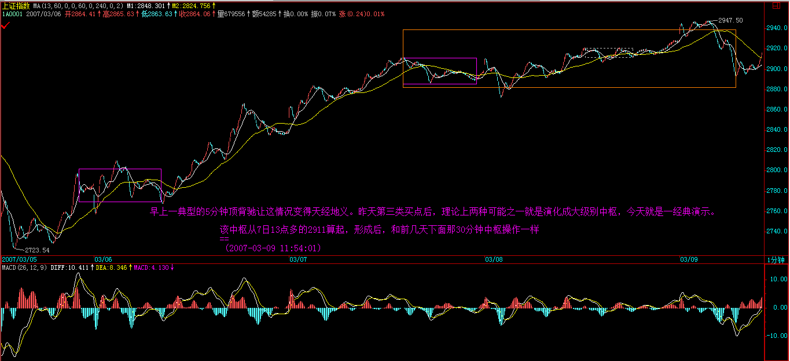 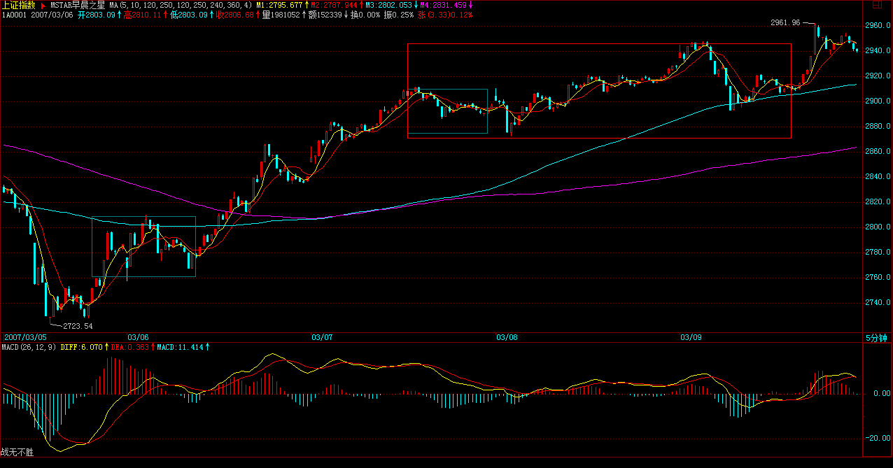 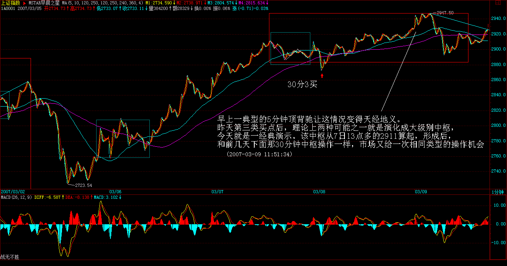 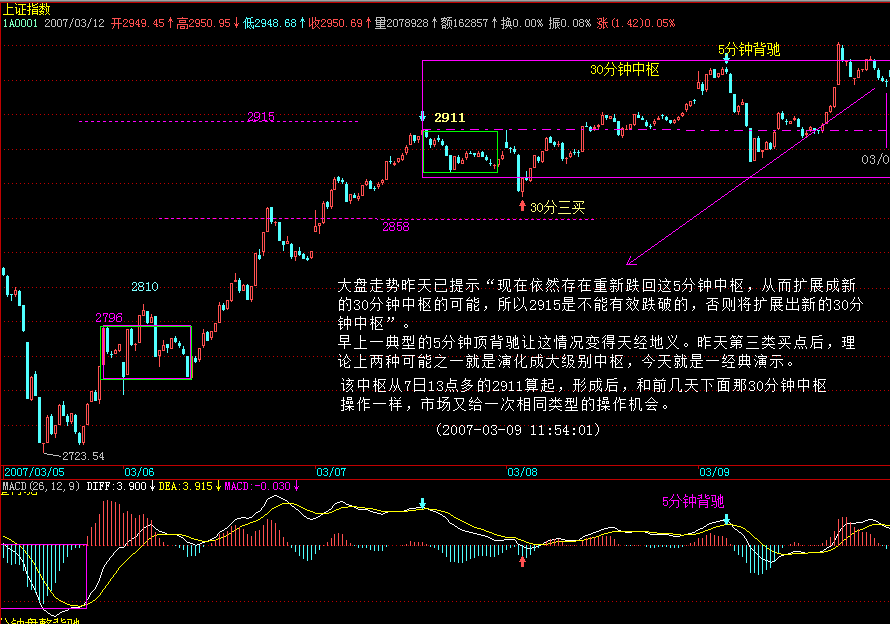 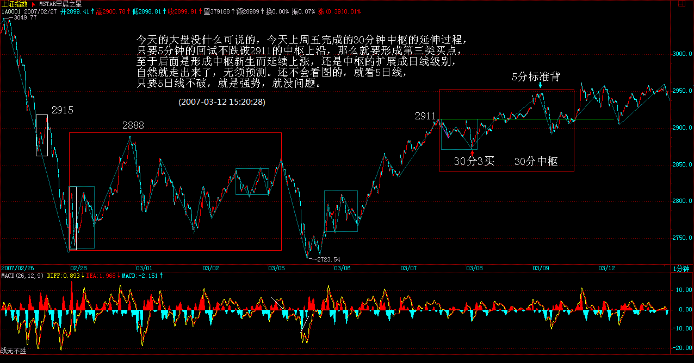
=====《论语》详解：给所有曲解孔子的人（56）=====
每日解盘 (2007-03-12 15:20:28)
今天的大盘没什么可说的，今天上周五完成的 30 分钟中枢的延伸过程，只要 5 分钟的回试不跌破 2911 的中枢上沿，那么就要形成第三类买点，至于后面是形成中枢新生而延续上涨，还是中枢的扩展成日线级别，自然就走出来了，无须预测。还不会看图的，就看 5 日线，只要 5 日线不破，就是强势，就没问题。
各股也没什么可说的，以前说的板块都没问题，现在关键是心理面上的影响，对 3000 点有点心理阴影，慢慢修复。而汉奸也企图利用两会结束，人们普遍的见好就收心理发难，所以这方面的斗争还将延续。深圳由于接近外边，所以受的影响更大，也走得弱点，如果深圳重新走强，那问题就简单了。汉奸做空也只为了买回来，现在世界上没有任何有实力的机构敢说完全放弃中国市场，别说 5 年，2 年都不敢，这样，你说汉奸又能翻多大的浪？甚至一个周中枢都不一定给他们面子。 (2007-03-12 15:20:28)
[ 匿名 ] 后知后觉 2007-03-12 16:07:16
强烈呼吁： 禅主：
最近有些迷惑，连以前学的也有些吃不准了。 希望您花一点时间，把最近的走势，从 5 分钟到 30 分钟都给说一次，中枢在哪里形成，怎么上去，怎么盘整的。接下来是怎么判断。
学的东西有些回退。希望禅主给一次清晰的讲解。 群里很多同学也跟我一样。 谢了！
==
每天都在说，像 8 日 2871 形成第三类买点，然后上去最后扩展成 30 分钟中枢，那天 ( 注：3 月 9 日中午发的帖子 2007-03-09 11:54:01) 还特意中午上来发帖子，告诉新的中枢是从 7 日的 2911 算起。注意，本 ID 的话都是有针对性的，当下的指出才是最有学习效果的，现在回头看，又变成理论干巴巴的分析。当下的理解，你整个身心都会关注着，这样的理解对形成直觉是有好处的。
任何走势都逃不过本 ID 的理论，大盘每天的走势就是免费的、最鲜活的教程。你必须随时能回答，现在大盘在干什么，例如，今天整天就对 2911 中枢上的震荡，早上的跳水看似恐怖，但却在 2911 附近止住，证明其向上的动力还是强的。但由于没在 2911 之上，所以还不能算是第三类买点。然后又是一个 5 分钟的上去，明天只要任何 5 分钟的回拉不跌破 2911，又形成新的第三类买点。但后面并不意味着一定继续上扬，特别是第二个中枢后，演化成更大级别的中枢，也就是日线中枢的可能是存在的。这一切不用预测，当下看就可以。 (2007-03-12 16:28:30)
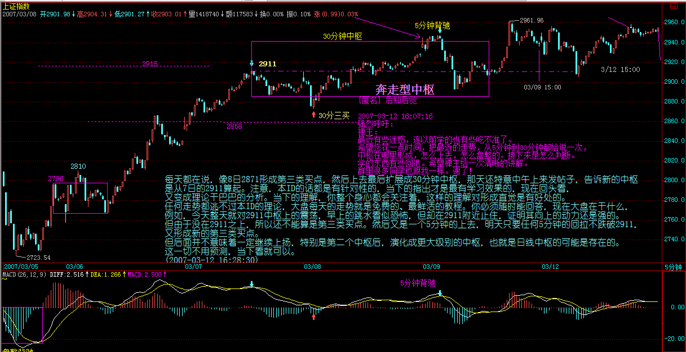 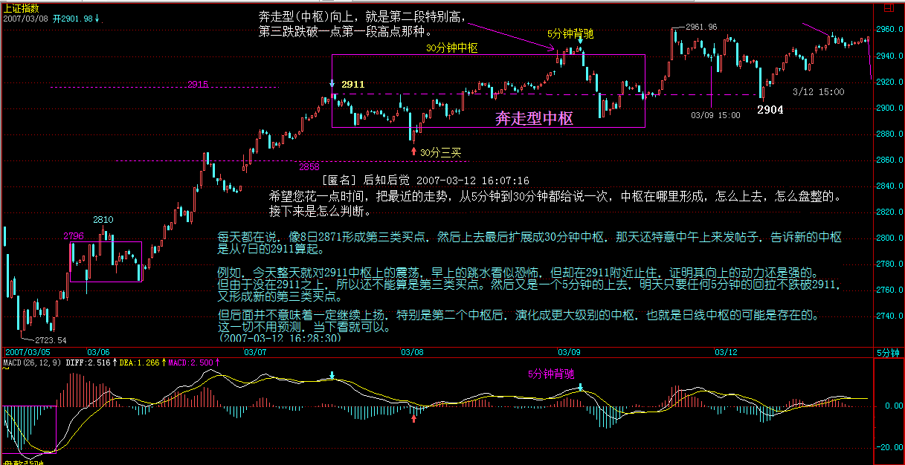 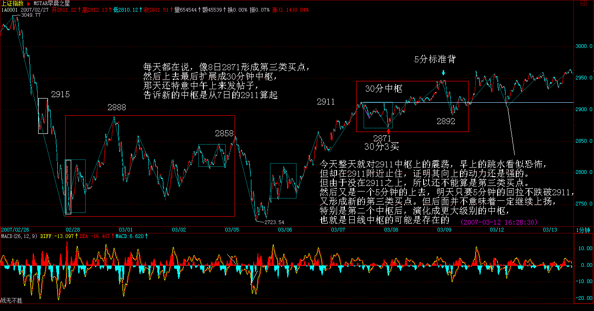
[ 匿名 ] 花儿
2007-03-12 15:42:47
我提议老师表扬一下 “ 大盘 ” 同学
==
给三朵大红花。希望各位之间都能互相帮助，本 ID 有时太忙，而且一个人也不可能应付所有人的问题。 (2007-03-12 16:00:18)
[ 匿名 ] 中间体
2007-03-12 15:36:48
今天的大盘没什么可说的，今天上周五完成的 30 分钟中枢的延伸过程，只要 5 分钟的回试不跌破 2911 的中枢上沿
2911 在哪里 , 请缠姐指出 .
==
3 月 7 日，这 30 分钟的中枢没有下面那个常见，这是一个奔走型的。 (2007-03-12 15:42:41)
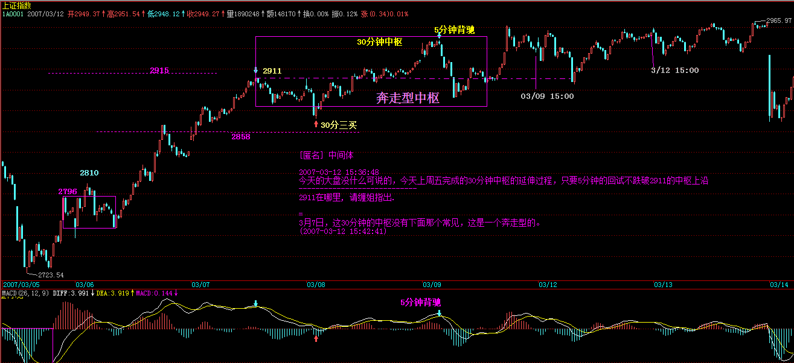
悠悠悠哉 2007-3-12 15:49
啥是奔走型的？？
悠悠悠哉
2007-03-12 16:26:39
我仍 ( 问 ) 的是不是就是 你说的那种奔走型的 向上突破了？
==
奔走型向上，就是第二段特别高，第三跌跌破一点第一段高点那种。 (2007-03-12 16:33:45)
[ 匿名 ] 中间体
2007-03-12 15:45:36
缠姐 , 为什么到目前位置还拿 2911 是的中枢来判定 . 而不拿临近的中枢呢 ??
==
这次上来就是两个中枢，2858 下面一个，2911 下面一个，从而形成 30 分钟级别的上涨，现在的问题是这个上涨是否延续，还是最后演化成 a`+B 型。 (2007-03-12 15:52:31)
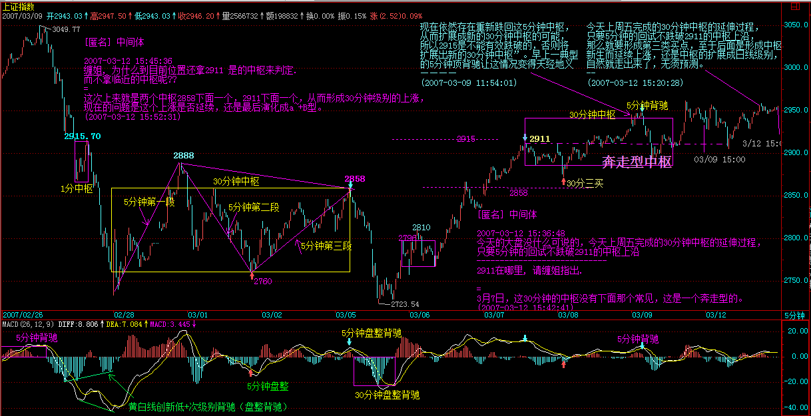 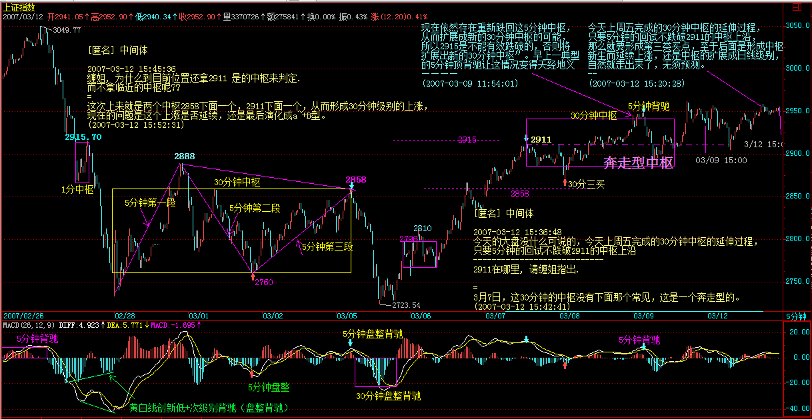 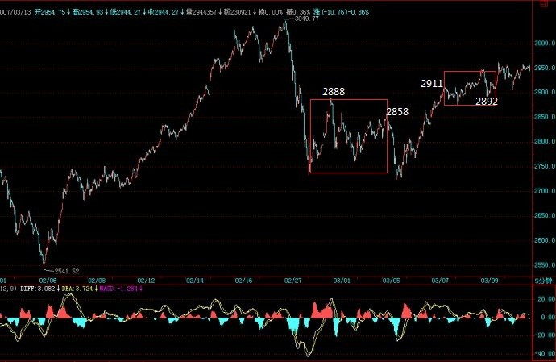
[ 匿名 ] 袖手旁观 2007-03-12 16:28:13
缠中说禅
2007-03-12 16:16:06
==
对，第二个 30 分钟中枢从 2871 到 2911。这次上来的走势，如同标准的教科书，好好仔细研究中枢的扩展、延伸等问题。
低点为什么是 2871？我一直当是 2892
==
对不起，写错了，是 2892 (2007-03-12 16:29:43)
注：这里有 “ 袖手旁观 ” 和 “ 酒吧心情 ” 两个网友对 30 分中枢的高低点分析
酒吧心情 2007-3-12 16:22
袖手旁观 2007-3-12 16:20
[ 匿名 ] 酒吧心情
2007-03-12 16:12:33
现在关键就是对 ZG 的判断 , 从 2911 来看的话 , 应该是从第一段的那个最高点算的 .
——————————————————
因为后面的 Zn 段都比 2911 开始的 Z1 段高或者等高（Z2 段其实也是从 2911 开始下来的），所以中枢高点就是 2911，而不是从第一段的最高点作为判断依据
==
请姐姐讲下我们俩谁说的对啊 ….
( 缠师给出判定：)
为了不引起误解，把原来的去掉，再发一遍，原来把中枢的结束位置写错了，
[ 匿名 ] 酒吧心情 2007-03-12 16:12:33
对于奔走型 , 我尝试着说下自己的看法 .
就是不断的进行中枢延伸 ……. 然后一旦有突破中枢 , 然后回抽不破最高点 ZG, 就说明有第三买点 , 对于大盘来说 , 就是上攻 .
现在关键就是对 ZG 的判断 , 从 2911 来看的话 , 应该是从第一段的那个最高点算的 .
不知道 JJ 的意思如何 . 请 JJ 明教
==
对，第二个 30 分钟中枢从 2892 到 2911。这次上来的走势，如同标准的教科书，好好仔细研究中枢的扩展、延伸等问题。
(2007-03-12 16:31:55)
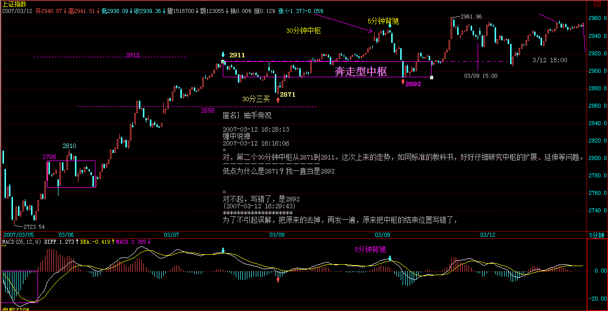
[ 匿名 ] 草草
2007-03-12 15:31:13 老师 : 我用你的方法 , 去研究周线三买 , 然后加了个量能突破 , 发现很好用 . 谢谢老师 , 今天平均收益 8%. 是我今年最强的一次了
==
请继续努力，这只是开头，另外，会买还要会卖，这样才能逐步形成操作的节奏，慢慢就有感觉了。 (2007-03-12 15:37:30)
[ 匿名 ] 摄影之友
2007-03-12 15:34:56 博主 :
昨天看 CCTV-2, 春暖 2007, 各大企业为农民工小学捐款 ….
里面的企业里有 601111 国航的李总 … 呵 … 怎么我看到他也会有种亲切的感觉呀 …. 难道是因为他是老大你提过的人吗 ? 我买过二次国航，它一次都没有亏待我。只是当时不懂，扔得太早了。
==
我一个朋友的父亲是他的老首长，所以对这人比较了解。所以当国航跌破发行价时，才这么肯定说一定有戏，我可没问过他，只是知道其人的性格。 (2007-03-12 15:41:01)
[ 匿名 ] 戈石
2007-03-12 15:38:11 女王好！
近来您忙什么大事呢？很好奇，能否透漏点儿？
==
先学好技术，这才是真正的大事。 (2007-03-12 15:47:53)
[ 匿名 ] mmhh
2007-03-12 15:45:27 缠 MM 好！ 根据 MM 的理论，0735 今天赚了 10%。爽极了！谢谢缠 MM.
==
关键是能长期坚持下去，不断总结提高。 (2007-03-12 15:49:54)
[ 匿名 ] 小小
2007-03-12 15:50:43
给妹妹道辛苦！ 一直看妹妹的论语来着，才知道原先学者们的解释面目全非，真吓人！ 妹妹，那从古至今，除妹妹之外，有没有解释得稍微好一些的？
==
康有为的好象和前人有所不同，不过本 ID 和他的没什么相同的地方。 (2007-03-12 15:53:44)
[ 匿名 ] 满目山河
2007-03-12 15:40:43 缠妹妹主导的传媒平台是什么？我对这个比股票更关心。 如果不方便说，就不必回答了：）
==
最近要出来，具体是什么，就没必要说了，反正枪炮一起对准汉奸。 (2007-03-12 15:57:02)
[ 匿名 ] 风云
2007-03-12 15:39:49 LZ 好， 请问，如果一段向上的走势，某天因除权而产生一个向下的跳空缺口，接下来形成一个中枢，这个中枢的第一段应该从哪算起，是否应把缺口处当作第一段，
=
缺口没什么特别的，你可以把除权缺口当成最低级别的下跌，新的中枢和一般下跌时形成新中枢的处理是一样。然后一切都按中枢的定义来看。有些缺口就在原来的中枢下面不远处，这样，同样可以按第三类卖点来操作，特别那种假填权骗人进来的行情，一下就能发现。
(2007-03-12 16:09:20)
[ 匿名 ] smallfish
2007-03-12 16:00:52 缠姐姐，学了这么久的技术，发现心态还没整好，最近买卖不佳，请问 002040，600196，明天找买点切入，可否中线持有？想歇一段，调整一下心态
==
注意，任何一次失误都要马上总结，不能连续失误再调整。如果真的出现连续失误，那就是你的方法有很大问题，必须改进，好好想好再操作。
方法的问题无非几种：参与过小级别的操作、没有按买卖点操作，参照过于频繁、对图形判断不熟练、有盲点、乱听消息等等。先把问题找出来，究竟是什么问题。
注意，失误的原因永远与市场无关，找原因，只能找自己的原因。 (2007-03-12 16:13:34)
注意，由于回答问题很多，偶尔出现错误是很正常的，特别一些数字的错误，有发现的请提出来，免得影响各位的判断。总之，一切都按本 ID 给的定义来。 (2007-03-12 16:35:32)
[ 匿名 ] 小小
2007-03-12 16:07:20 [ 匿名 ] 小小
2007-03-12 15:50:43 给妹妹道辛苦！ 一直看妹妹的论语来着，才知道原先学者们的解释面目全非，真吓人！ 妹妹，那从古至今，除妹妹之外，有没有解释得稍微好一些的？
==
康有为的好象和前人有所不同，不过本 ID 和他的没什么相同的地方。
==
那妹妹的论语啥时候出版啊？要是暂时不出，俺只好老老实实自己打印下来学习了，特别要推荐给我上大学的女儿，一起学习！
==
明年吧，今天写不完。 (2007-03-12 16:36:50)
本 ID 的论语解释中有些开玩笑的段落，不适宜 20 岁以下人群，所以给 20 岁以下人群看时，最好适当把无关紧要的地方删掉。 (2007-03-12 16:38:17)
快 5 点，要下了，再见。 (2007-03-12 16:40:02)